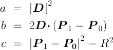

： 光線の始点の位置ベクトル，
 ：
光線の速度ベクトル
：
光線の速度ベクトル
： 交点の位置ベクトル， ： 光線が交点に到達するのにかかる時間
最も単純な３次元図形「球」を対象として， レイキャスティング法によるレンダリングプログラムを作成する． シェーディング（陰付け）とシャドウイング（影付け）を実装し， Fig.1 のように（ある程度）リアルな画像を生成することを目標とする．
なお，Fig.1 では， 拡散反射率や鏡面反射率の調整によって， 質感の異なる球体が表現されている．
レイキャスティング法（ray-casting）では， ある点から発射された光線（照明光線，視線）を追跡し， どれかの物体との衝突を検出する． 実際には，次の２種類の処理で利用される：
ここでは，簡単のため物体の形状を球に限定し， レイキャスティングをベクトル的に解析する． Fig.2 のような配置を考えよう．
各変数の意味は次の通り：
：
光線の速度ベクトル
また，光線と交点，球と交点との関係は，それぞれ，次のようになっている：
：光線の方程式（直線運動の方程式）
：球面の方程式
これらの２式から P(t) を消去すると， 次の二次方程式が得られる：
この方程式を解いて t を求めれば， 交点 P(t) を算出できる． なお，交点の個数は１個とは限らないことに注意しよう．
以下，簡単のため方程式を次のように置き換えて解説する：
ただし，

t の実数解が存在しないので，交点も存在しない．
球の中心が光線とは逆方向にあるということなので， 明らかに，交点は存在しない．
光線の始点が球の内部にあるということなので， 交点は存在しないものとする．
の実数解が２つ存在する．
それらのうち小さい方（始点に近い方の点）を交点の計算に採用する．
シェーディング（shading）では， 視線方向（の逆方向）への反射光の強さを求める． この処理も，ベクトル演算によって計算される． ベクトルの配置を Fig.3 に示す．

入射光線 L と 視線 V の方向に注意． 光線の進行方向とは逆向きに定義されている．
また，各変数の記号も違うかもしれない． 適宜，置き換えて考えよう．
環境光（周囲物体からの反射等による均一な照明光）の強度 Ia による 拡散反射光の強度 La および 照明光の強度 Ii による 拡散反射光の強度 Ld は， 拡散反射率 Kd， 照明光の方向 L， および法線の方向 N から， 次のように計算される．

ただし，
なお，この数式のままでは， 拡散反射光の強度 Ld が負となる場合もある． しかし，物理的には，光の強度は非負のハズなので， cosα ＜ 0 の場合には， cosα ＝ 0 等と変更する必要がある．
鏡面反射強度 Ls は， 鏡面反射率 Ks， 鏡面反射方向 R， および視線方向 V に依存する． なお，Fig.3 の視線方向 V は， 実際の視線（レイキャスティングの視線）とは逆向きであることに注意せよ．
ただし，

なお，拡散反射と同様， cosγ ＜ 0 の場合には，cosγ＝ 0 としておく必要がある． cosα ＜ 0 の場合にも，cosγ＝ 0 である．
なお，n はハイライト部分の大きさを制御するパラメータであり， 反射率と同様に，材料に固有の値をもつ． n が大きいほどシャープなハイライトが得られる．
以上の反射光強度の合計 La＋Ld＋Ls が シェーディングの結果となる．
ここで示したベクトル計算は複雑すぎる... 簡単化のため，次のように対処することがよくある：
以前利用した BSP-tree 法では， ポリゴンモデルの隠面処理を高速に実現していた． しかし，この方法は曲面体に対してはうまく適用できない． そこで今回は，デプスバッファ法（depth-buffering）を利用する．
デプスバッファは，画像の一種であり， 色情報の代わりに深度（視点から物体表面までの距離） を画素値としている．
デプスバッファ法のアルゴリズムは次の通り：
これで，木生成やソートなどの前処理を施さなくても，隠面処理を実現できる． 教科書 p.107 および配布資料 p.66 の「Zバッファ法」を参照せよ．
ダウンロードして実行してみよう：
$ tar zxvf raycast.tgz $ cd raycast $ make
$ ./raycast &
この基本プログラムでは， 環境光と拡散反射のシェーディングのみが実装されている． 鏡面反射およびシャドーイングについては実装されていない． （これが本日の課題．）
なお，ベクトル演算の注意点として， 計算しようとしている量が ベクトル or スカラのどちらであるのか？ 見極めることが非常に重要である． たくさんの関数の中から，適切な関数を選び出すこと．
基本プログラムでは， 照明光が物体を通過して他の物体を照らしている状況であった． しかし，現実の世界では， 光は最初に交差した物体によってさえぎられ， そこに影が生じるハズである． 余裕のある者は， この現象をプログラムに実装してみよう．
基本的なアルゴリズムを示す：
要するに，視点の代わりに注視点， 視線の代わりに照明光線を使って交差判定すればよい． 他の物体との間に交差があれば， その注視点は影領域内ということになる．
なお，自分自身を検査対象から外すのは， 注視点の計算結果に誤差が含まれているためだ． 算出された注視点は，ぴったり表面上にはなく， 約50％の確率で球のちょっとだけ内部に入り込んでいる． で，自分自身によってさえぎられている，と誤解してしまうことになる． （本来ならば，このような自己隠蔽についても検査対象とすべきなのだが， 今回のような凸図形であれば，対象外としても問題ない．）
基本プログラム raycast.c を元にして，鏡面反射を実装せよ． そして，球の配置・材料や照明の方向などのパラメータを自由に変更し， オリジナルな画像を生成すること．
また，余裕のある者はさらに，シャドーイングについても実装せよ． （この場合，もちろん，影が写っている画像を作ること．）
さらにやる気のある者は， 他の形状（平面，円柱，など）も表示できるようにしてみては？ （この場合，交差計算とデータ構造についても考案する必要がある．）
実行結果の画像を作るには，前回同様，import を使えばよい．